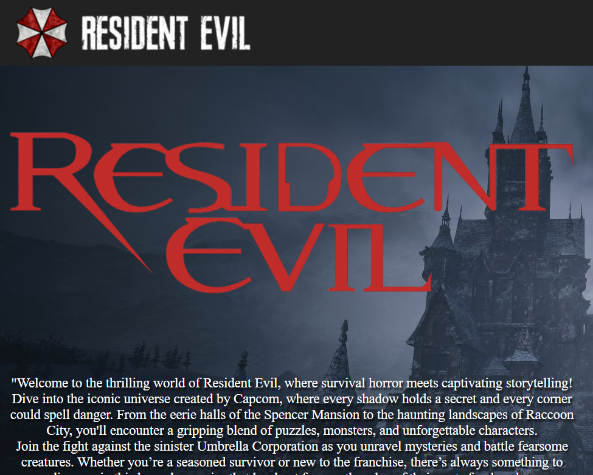
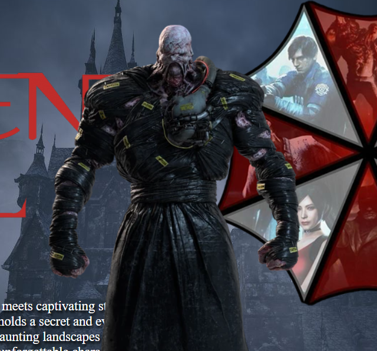
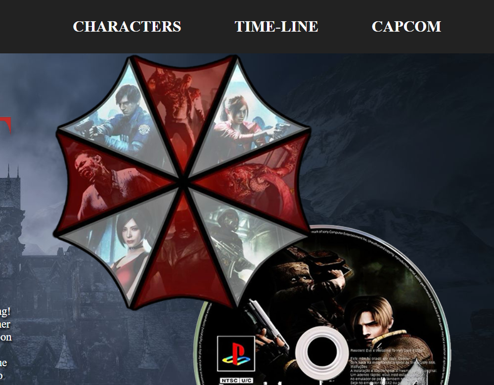

I created a fan website dedicated to the Resident Evil games, one of my favorite horror game franchises. As a big fan of the series, I thought it would be exciting to build a site that captures its essence. The website is designed using CSS Grid for a responsive layout and features a navigation bar with the Resident Evil logo and links to additional pages with more information about the games.There’s also a brief description of the series and a button that triggers a JavaScript-powered jumpscare, complete with sound effects.


